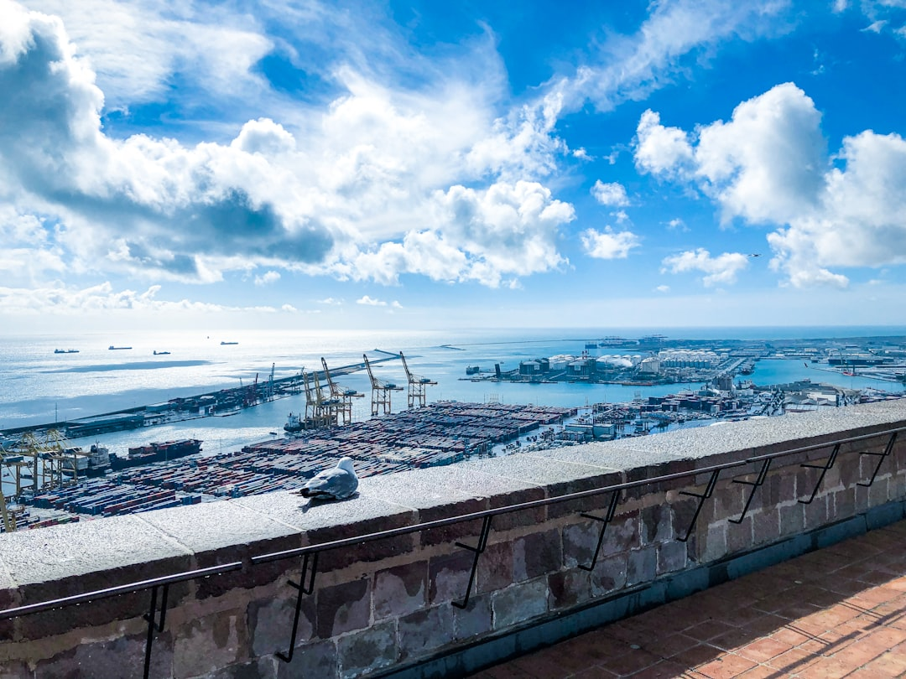

중국은 문을 막은 게 아니라, 새던 곳을 조였다

중국 상무부는 2026년 7월 1일 공고 제26호 '전략 광물 이중용도 품목의 불법·부정 수출통제 신고 및 처리 개선에 관한 사항'을 시행했다. 근거 법령은 중화인민공화국 수출통제법과 대외무역법이다. SMM(Shanghai Metals Market)이 7월 10일 보도한 내용이다.
공고는 신고 대상 행위를 13가지 유형으로 명시했다. SMM 보도에서 확인된 유형은 무허가 수출, 허가 범위 초과 수출, 부품 분할을 통한 허가 회피, 제3국 경유를 통한 통제 회피 등이다. 13가지 전체 목록과 마그네슘 외 대상 품목 범위는 이번 보도에서 공개되지 않았다.
책임 범위가 수출 당사자를 넘어섰다. 대행·통관·금융 등 서비스를 고의로 제공한 중개인도 책임 추궁 대상에 포함됐다. 거래에 직접 관여하지 않은 중간 사업자까지 규제 대상으로 들어온 것이다.
마그네슘 및 그 제품은 2026년부터 이중용도 품목 수출 허가 관리 대상에 포함됐다. 수출이 금지된 것이 아니라, 수출 시 허가를 받아야 하는 품목으로 관리 체계가 바뀐 것이다. SMM은 대일본 수출통제 강화가 이어지면서 알루미늄 가공용 고순도 마그네슘 제품의 수출이 교착 상태에 빠졌다고 전했다.
이번 조치는 통제 품목을 새로 지정한 것이 아니다. 규제의 높이를 올린 게 아니라 규제 아래로 지나다니던 통로를 막았다. 중국의 전략 광물 통제는 이미 몇 년째 있어 왔지만, 규제가 있어도 물건은 어떻게든 들어왔다. 홍콩을 거치는 경로가 대표적이었다. 서류상 최종 목적지가 바뀌면 통제의 그물을 빠져나갈 여지가 있었다. 공고 26호가 건드린 지점이 정확히 여기다. 필자의 경험으로는 이런 종류의 조치가 실무에 훨씬 크게 온다. 금지 품목이 늘면 대체재를 찾으면 되지만, 기존 경로가 막히면 같은 물건을 같은 가격에 사면서도 물류가 선다.
중개인 책임 확대는 이미 현장 반응을 만들었다. 책임이 확대되면서 거래 자체를 거절하는 사례가 나오고 있다. 무역상과 포워더 입장에서는 당연한 선택이다. 마진 몇 퍼센트를 벌자고 법적 책임을 떠안을 이유가 없다. 정부가 수입업체를 직접 제재하지 않아도, 중간에서 일을 처리해주던 사람들이 손을 떼면 거래는 멈춘다. 허가 관리 대상 편입의 체감도 만만치 않다. 필자가 보기에 실무적으로 두세 달이 추가로 걸린다. 분기 단위로 자재 계획을 짜는 회사라면 계획 한 분기가 통째로 흔들리는 시간이다.
가장 주목할 것은 마그네슘이 아니다. 이 방식은 수평으로 전개될 가능성이 높다. 품목을 하나씩 지정하는 대신 신고·처벌 체계를 먼저 세워두고 대상 품목을 얹어가는 구조이기 때문이다. 틀이 만들어지면 그다음은 품목 추가만 하면 된다. 반도체·방산·전기차와 연결된 핵심 물질들을 주목해야 한다. 산업적으로 타격이 큰 곳, 그래서 지렛대가 되는 곳이다. 마그네슘이 알루미늄 합금을 통해 이 세 분야에 모두 닿아 있다는 점은 우연이 아닐 것이다.
중국을 거치지 않는 직거래 조달 경로를 이미 확보한 수입사들이 상대적으로 유리해진다. 경유 구조를 쓰지 않았던 기업은 이번 규정 변화로 추가 부담이 거의 없는 반면, 경쟁사는 경로 재편에 시간을 쓰게 된다. 조달 리드타임 격차가 그대로 납기 경쟁력 차이로 전환되는 구간이다.
비중국 마그네슘 생산국의 공급사들에게는 협상력이 생긴다. 호주·미국·브라질·튀르키예 등이 후보로 거론되나, 이들의 생산 규모는 중국에 비하면 미미한 수준이다. 산업 전체가 옮겨갈 물량은 아니어서 물량 확대보다 단가 상승 형태로 이익이 나타날 가능성이 크다.
홍콩 등 제3국 경유 경로에 의존해온 수입업체들이 가장 직접적인 타격을 받는다. 해당 경로가 신고 대상으로 명시되면서 기존 조달 구조를 그대로 유지하기 어려워졌고, 대체 경로를 찾는 동안 공급 공백이 발생한다.
중개무역상과 포워더가 구조적으로 불리해졌다. 대행·통관·금융 서비스 제공자까지 책임 범위에 들어오면서 리스크 대비 마진이 맞지 않게 됐고, 실제로 거래를 거절하는 사례가 나오고 있다. 마그네슘을 쓰는 알루미늄 합금·다이캐스팅 부품 업체들은 이 중간 고리가 빠지면서 조달 자체가 지연되는 2차 피해를 입는다.
지금 쓰는 조달 경로에 제3국 경유 구간이 있는지 즉시 확인해야 한다. 있다면 그 경로는 이제 리스크다. 단가가 다소 비싸더라도 직거래 경로를 병행해 두는 편이 낫다.
마그네슘만 보지 말아야 한다. 자사가 쓰는 중국산 소재 중 반도체·방산·전기차에 걸쳐 있는 품목을 지금 목록으로 만들어 둘 것을 권한다. 다음 공고가 나온 뒤에 만들면 늦는다.
자재 계획의 시간축을 다시 잡아야 한다. 허가 절차로 두세 달이 추가된다는 전제로 분기 계획을 재검토하고, 규제 대상 편입이 예상되는 품목은 재고 정책을 별도로 운영하는 것이 안전하다.
이 포스팅은 쿠팡 파트너스 활동의 일환으로 수수료를 제공받습니다.